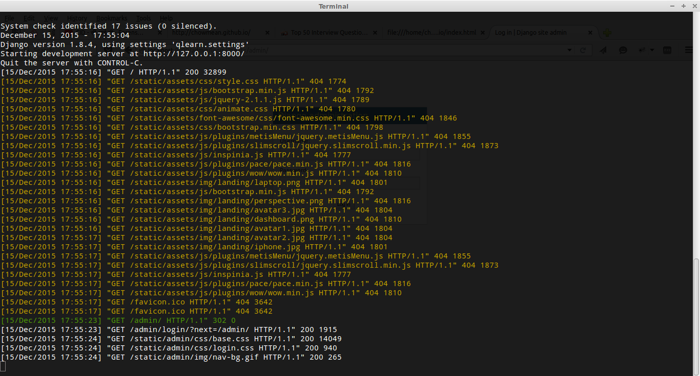

Terminal
without it this world will not survive.
Learn more
Tweet Tweet
Facinating space for anaytics.
Learn more

Request/Response
Request and response are one of the most orgasmic events.
Learn more